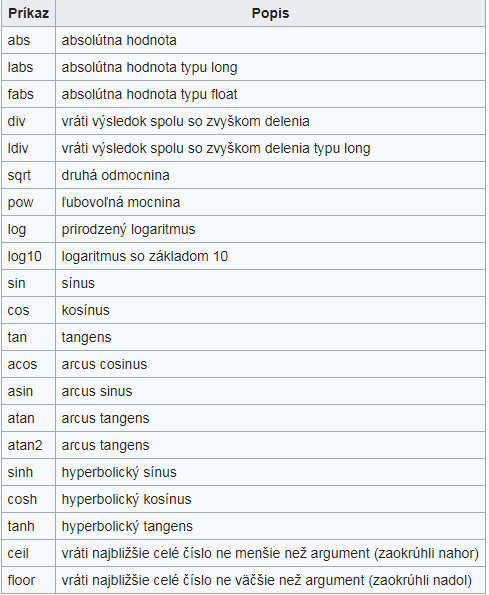

generovanie cisel z intervalu a podmienka
#include
#include
#include
int main(void)
{
int j,m=0,a,i,p[20];
srand(time(0));
for(i=0;i<20;i++)
{
p[i]=rand()%181+20;
printf("%d\n",p[i]);
}
printf("-------------------------------------------------------------\n");
for(i=19;i>=0;i--)
{
printf("%d\n",p[i]);
}
scanf("%d",&a);
for(j=0;j<20;j++)
{
if(p[j]
m++;
}
}
printf("pocet cisel mensich ako %d je %d",a,m);
}

Javoslavec
generovanie cisel
public static void main(String[] args) {
Random cislo = new Random();
int x;
for (int i=0; i<10; i++){
x = cislo.nextInt(10);
System.out.println("cislo je "+ x);
}
}
javička pole
System.out.println("zadaj cislo");Scanner a = new Scanner(System.in);
int x = a.nextInt();
int[] pole = new int[4];
pole [1]=2;
int i;
for(i=0;i<5;i++){
System.out.println("cislo v poli "+pole[x]);